ЛАБОРАТОРНО-ПРАКТИЧНА РОБОТА
Тема: «Оброблення країв виробів»
Мета: засвоєння способів обробки країв виробів, остаточної обробки вишитих виробів; формування вмінь обробляти краї виробів; виховувати уважність, охайність.
Матеріали та інструменти: тканина, нитки, голки, наперсток, ножиці, картон, лінійка, олівець.
Порядок виконання роботи:
- Ознайомитись з теоретичними відомостями практичної роботи.
- Підібрати матеріали та інструменти для роботи.
- Згідно з технологічними вимогами виконати зразок обробки краю серветки рубцюванням.
- Згідно з технологічними вимогами виконати зразок обробки кута серветки на ширину 2,5 см.
- Виготовити шнур з китицями для оздоблення горловини вишитої сорочки.
Теоретичні відомості:
Кожен зшитий або вишитий виріб потребує відповідного оформлення. Особливо це стосується країв виробу. Їх оформляють рубцями, зубчиками, торочками з ниток і петель, кольоровими кантами з інших тканин, шнурами, вишивкою тощо. Для оброблення країв вишитих виробів застосовують різні шви. Найпростіший – підігнутий і підшитий рубець.
Рубцювання
Рубці можуть бути різні за шириною: до 0,5 см для підшивання білизни та блузок; 1,0–1,5 – для серветок, 2–3 – для рушників і 3–4 см – для скатертин. Підшивають рубці з вивороту, а оздоблювальні – з лиця мережками, простими й декоративними швами (рис. 110).
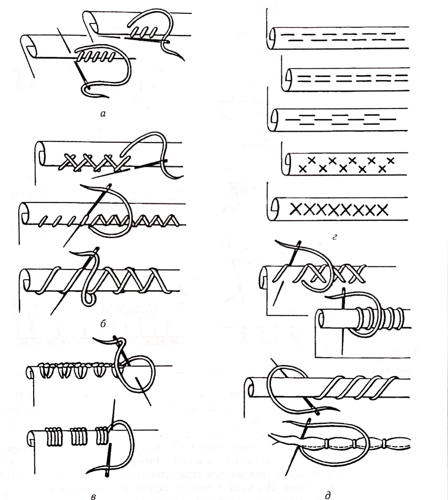
Рис. 110. Рубцювання: а – простим рубцем: б, в – з оздобленням; г – з лиця; д – закруткою
Рубець складається з трьох загнутих шарів тканини: верхнього, нижнього із зворотного боку виробу та внутрішнього краю, який загинають усередину на 0,5 см, щоб запобігти висипанню ниток. Перш ніж позначити ширину краю для підшивання, треба вирівняти тканину по витягнутій нитці. По її сліду відрізають лишки тканини і від кута по вертикалі та горизонталі відкладають потрібну ширину рубця. Підгинають рубець і приметують.
Шов проста підрубка (рис. 110, а) використовують для підшивання наметаного рубця дрібними стібками шва вперед голку. Стібки виконують, набираючи на голку спочатку кілька ниток двох шарів рубця, а потім одну нитку біля рубця. Випрасувавши рубець, виймають намітку.
Рубцювання з оздобленням застосовують для дитячого та жіночого одягу, столової білизни та інших виробів. Одночасно з підшиванням робочою ниткою прикрашають сам рубець (рис. 110, б, в).
Вузенькі (до 5 мм) рубці прикрашають з лиця. Спочатку їх загинають на лицьовий бік, приметують і зверху вишивають строчкою, хрестиком, кривулькою тощо (рис. 110, г).
Рубцювання закруткою (рис. 110, д) застосовують для тонких тканин; водночас воно є прикрасою.
Рубцювання мережкою (рис. 111) широко застосовують для оформлення вишитих виробів. Залежно від ширини мережки підрізують потрібну кількість ниток тканини і витягують їх. Звичайно рубець підшивають найпростішими мережками – одинарний і подвійний прутики, розколотий прутик на трьох-п’яти нитках в один, два і більше рядів.
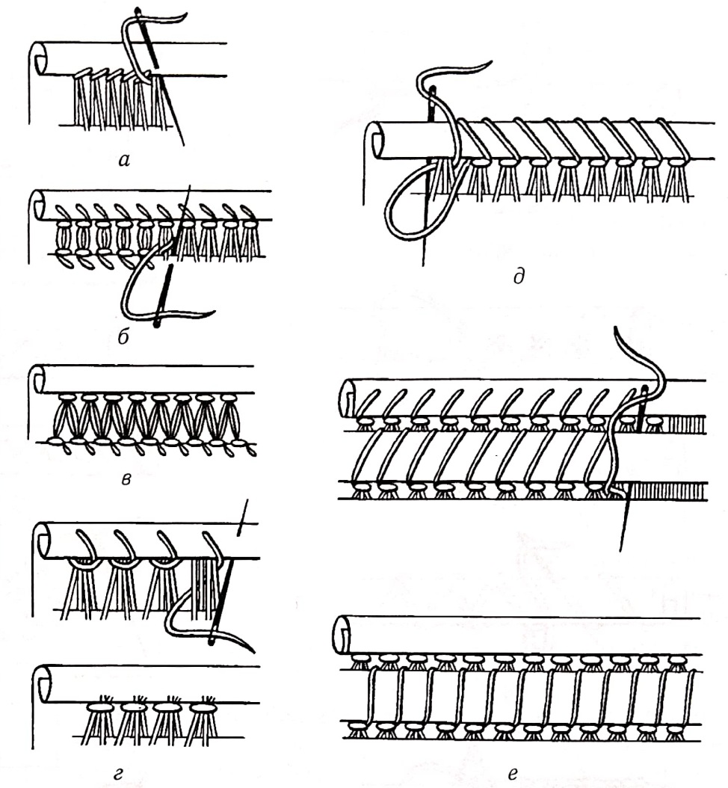
Рис. 111.Рубцювання різними мережками
Оброблення кутів (рис. 112) вишитих виробів залежить від форми виробу. Якщо підшивка за довжиною ширша, ніж за шириною (або навпаки), то кути накладають один на другий і підшивають. Якщо підшивка з усіх сторін однакова (скатерки, квадратні серветки), то кути зашивають по діагоналі. Для цього від кута виробу (точка А на рис. 112, а) по вертикалі та горизонталі відкладають потрібну ширину рубця з підгином. Від кута А виробу підрізують та витягують по одній нитці (не витягуючи нитку з тканини для рубця), щоб побудувати решту кутів. Потім біля внутрішніх кутів витягують по три-шість ниток тканини для мережки і підшивають рубець. Кути рубця складають по діагоналі А–Б і зшивають тканину по похилій лінії (рис. 112, б) вручну або на машині. Залишки тканини рубця зрізують (рис. 112, в) і прасують шов (рис. 112, г). Якщо тканина товста, то краї швів у кутах трохи скошують, щоб після вивертання кут був пласким. Вивертають кут, підгинають на виворіт край рубця (підгин) завширшки 0,5 см і приметують до краю мережки стібками шва вперед голку (рис. 112, д) котушковою ниткою. Потім підшивають рубець вузенькою мережкою – прутиком (рис. 112, е).
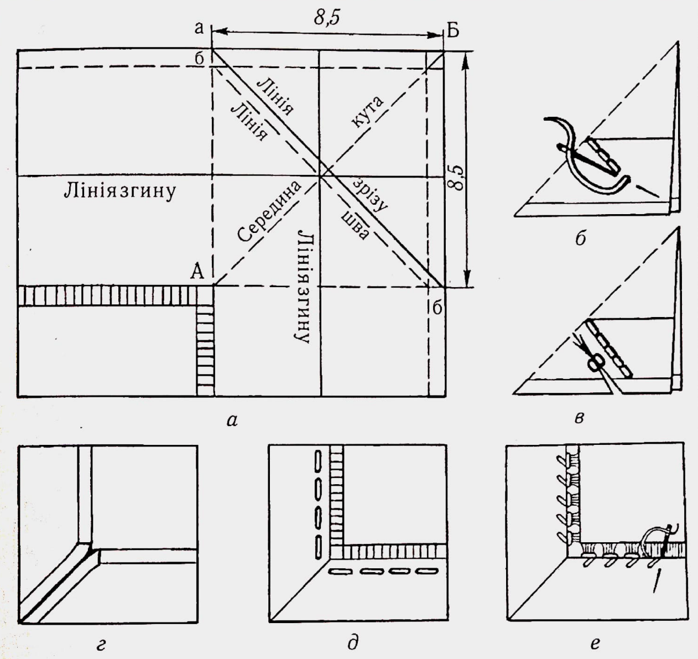
Рис. 112.Оброблення кутів виробів
Зубцювання.Усі види зубців, якими прикрашають край одягу з тонких тканин, виконують за одним принципом: відступивши на 1 см від краю виробу, витягують нитки з тканини, вишивають мережку, потім згинають її по середній лінії так, щоб нижня частина була підігнута на виворіт. Суміщують окремі деталі мережки, приметують і підшивають рубець. Ширину мережки вибирають залежно від щільності тканини. В Україні такий вид оздоблення низу рукавів, чохлів, низу сорочки, комірців називають зубцюванням.
Зубцювання одинарним прутиком (рис. 113) виконують так. Спочатку витягують із тканини три-чотири нитки для мережки. Посередині витягнутої доріжки стібками назад голку стягують по чотири нитки у пучок (рис. 113, а-в).Потім складають цю смужку навпіл по лінії стібків, щоб нитки кожного з пучків збігалися. Складені половинки рубця скріплюють стібками через край (рис. 113, г). Кожен стібок забирає дві поздовжні нитки рубця з лиця та з вивороту, що відокремлює пучки один від одного, створюючи зубчастий край. Із вивороту рубець приметують і підшивають потайними стібками, а з лиця, відступивши на дві-три нитки від зубців, прошивають верхній і нижній шари рубця швом строчка (рис. 113, д, е).
Зубцювання подвійним прутиком показано на рис. 113, є–з.
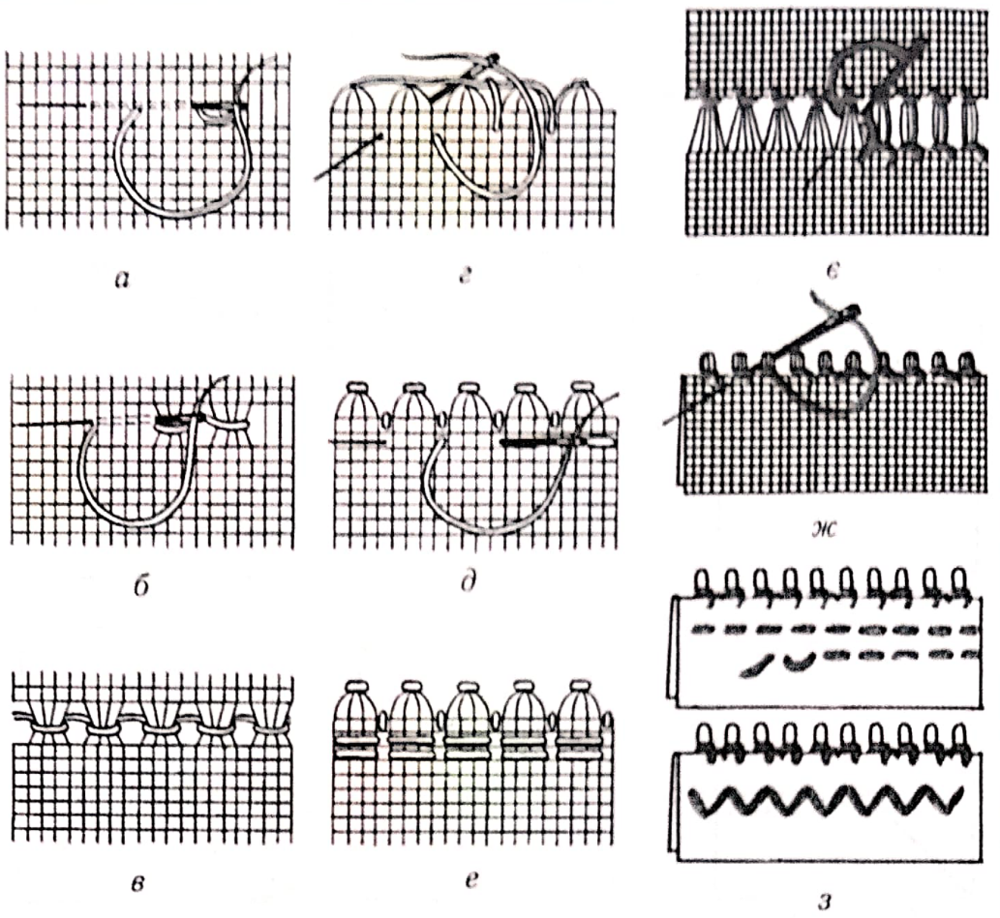
Рис. 113.Зубцювання прутиком: а~е ~ одинарним; є-з – подвійним
Зубцювання на трьох прутинках (рис. 114, а) виконують так: на смужці витягнутої тканини завширшки 1 см роблять подвійний прутик, стягують робочою ниткою по три прутинки петлею в пучки і перегинають мережку по середній лінії. Закріплюють їх стібками через край і підшивають рубець із вивороту або з лиця.
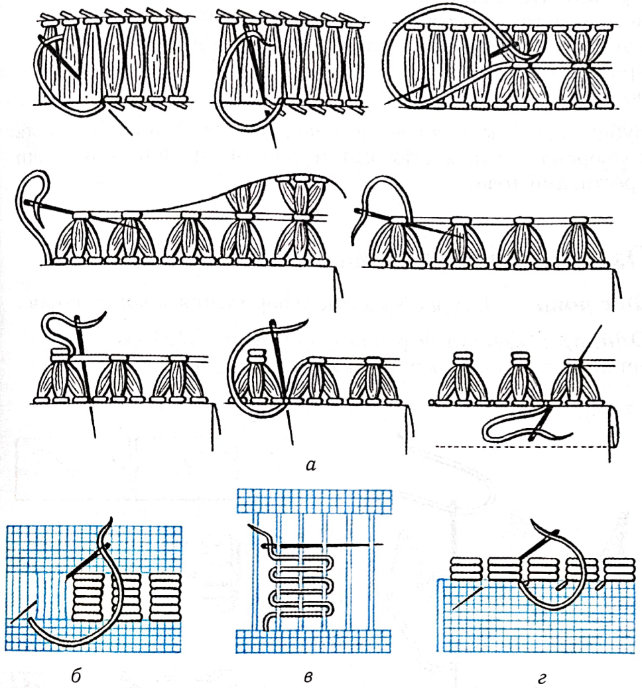
Рис. 114.Зубцювання: а - на трьох прутинках; б – настилом; в - штопанням;
г - підшивання зубців
Зубцювання мережкою настилом виконують аналогічно. Спочатку витягують нитки для мережки, а потім кожну прутинку у три-чотири нитки обплітають робочою ниткою прийомом настил або штопання (рис. 114, б, в). Перегинають по середній лінії і підшивають (рис. 114, г).
Зубці підшивають, водночас прикрашаючи з лиця білою або кольоровою ниткою стібками дворядної строчки, кривульки, хрестиками тощо.
Оздоблення фестонами. Фестони – фігурне художнє оформлення країв виробів.
Одинарні фестони різної форми (рис. 115) свого часу шили на білизні, одязі, серветках. Щоб виконати фестони, спочатку з тонкого картону роблять лекала у вигляді зубців з круглими, гострими чи прямокутними краями. Потім лекала кладуть на тканину й обводять контури фестонів м’яким олівцем. Контур прошивають швом уперед голку, кладуть настил і прикрашають одним із декоративних вишивальних швів – петельним (рис. 115, а, б) або гладдьовим із настилом чи без нього. Закінчивши роботу, гострими ножицями акуратно, щоб не пошкодити нитки обшивки, зрізують тканину по краю виробу.
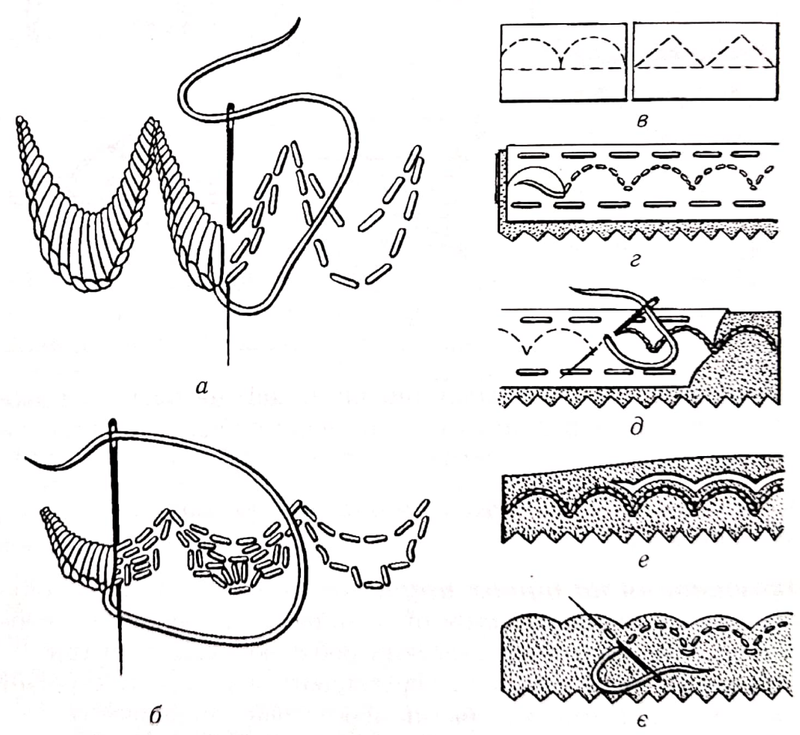
Рис. 115.Оброблення країв виробів фестонами:
а. б - одинарними; в-є - подвійними
Подвійні фестони роблять при оформленні одягу. Спочатку виготовляють лекала (рис. 115, в). Згортають тканину лицьовим боком усередину, кладуть лекала на тканину обводять їх м’яким олівцем. Потім прошивають контур швом уперед голку (рис. 115, г), зшивають краї фестонів швом строчка (рис. 115, д) вручну або на машині. Зрізують лишки тканини, вивертають на лице і приметують краї фестонів (рис. 115, е, є). Випрасувавши виріб, можна прикрасити фестони кольоровою строчкою, вишивкою, гладдю.
Декоративні торочки.Торочки(рис. 116) з витягнутих ниток із краю робочої тканини також прикрасять виріб. Торочками закінчують серветки і рушники. Довжина їх залежить від розміру виробу: для невеликих серветок – це 3-4 см, для більших – до 10 см.
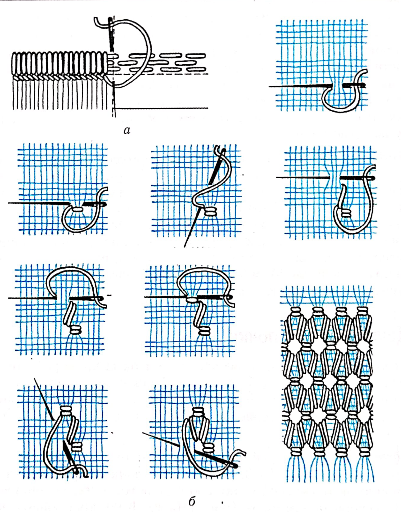
Рис. 116.Оформлення країв виробів торочками з ниток:
а - обміткою; б – мережкою
Можна закріпити край виробу шнурочком гладі або обміткою. На відстані 1,5-3,0 см від краю виробу прошивають тканину швом уперед голку або строчкою, а зверху вишивають декоративним швом (рис. 116, а). Коли краї обшиті, виріб випраний і випрасуваний, витягують поперечні нитки від обмітки до краю.
Щоб виготовити торочки мережкою, спочатку на відстані 4-5 см (для китичок завдовжки 3-4 см) витягують вузьку смужку тканини і роблять мережку, закріплюючи нею край тканини виробу. Потім витягують нитки, які залишилися від мережки до краю виробу, і вирівнюють їх (рис. 116, б).
Витягнуті нитки не треба викидати, вони згодяться для виготовлення шнурів, китичок, помпонів, сувенірів.
Торочки з кольорових ниток (рис. 117) також можуть прикрасити виріб. Роблять їх на кінці виробу на відстані 2,0–2,5 см або більше (залежить від розміру вишитого виробу) від краю, закріплюючи кольорові нитки стібками різних вишивальних швів на відстані у дві-три нитки тканини (рис. 117, а-в). Потім нижню частину робочої тканини зрізують, залишаючи край на ширину рубця. Цей край загинають на виворіт і підшивають потайним швом. Петлі вишитої смуги утворюють торочки.
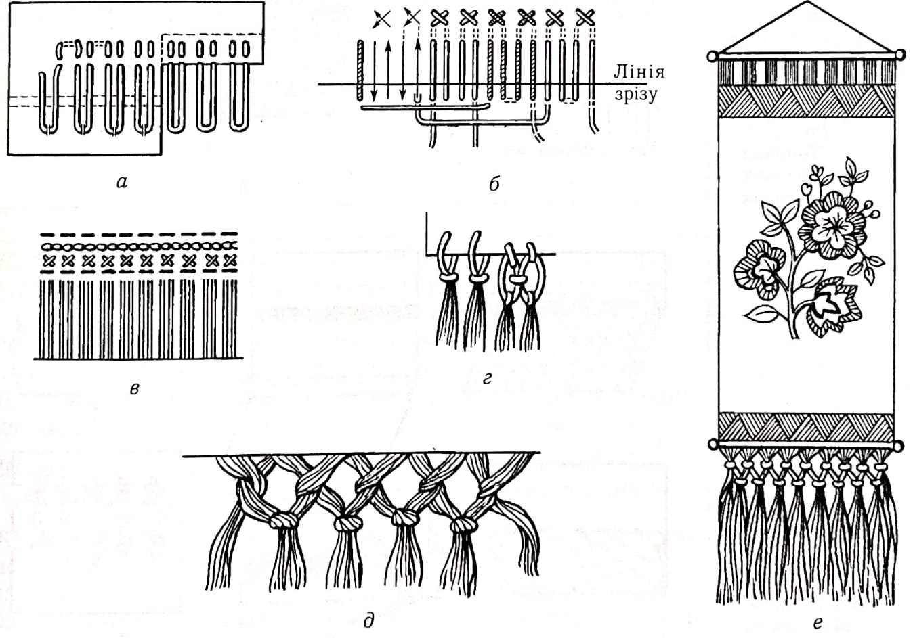
Рис. 117.Торочки з кольорових ниток: а-в - нашиті; г~е - викопані вузлами
Можна закріпити нитки для торочок на готовому рубці (рис. 117, г) або залишити, не зрізуючи робочу тканину і висмикнути з неї нитки, тоді вийдуть подвійні торочки.
Вузликові торочки на витягнутих нитках (рис. 117, д, е)прикрашають рушники й панно. Спочатку розділяють нитки на окремі пасма. Потім кожне пасмо розділяють навпіл і зв’язують другу (праву) половину першого пасма з першою (лівою) половиною другого пасма і т. д. До таких торочок можна додати кольорові нитки.
Торочки петлями (рис. 118) складаються з висячих петельок різної довжини. Вишивають петлі «на око» (рис. 118, а)або за допомогою намотування ниток на рейку-шаблон потрібної довжини петель (рис. 118, б). Можна вишити тільки один ряд петельок або два-три (рис. 118, в). Закріплення петлі різними швами також є декоративним оформленням виробу.
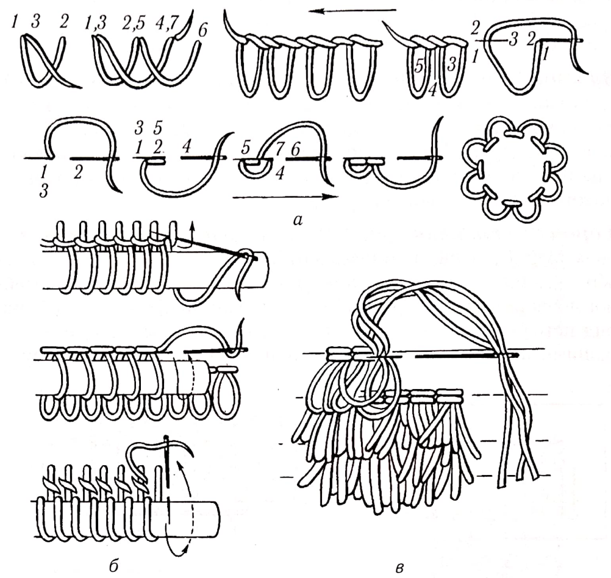
Рис. 118.Торочки з висячих петельок
Кольорова облямівка (рис. 119) для прикрашання виробів із кольоровою вишивкою може бути різна за шириною. Колір її має відповідати кольору вишивки. Облямівку пришивають до краю виробу (серветки, панно), загинають на лице і приметують (рис. 119, а, б). З’єднують з основною тканиною козликом, хрестиком, пилочкою, мережкою в один- два ряди (рис. 119, в–е).
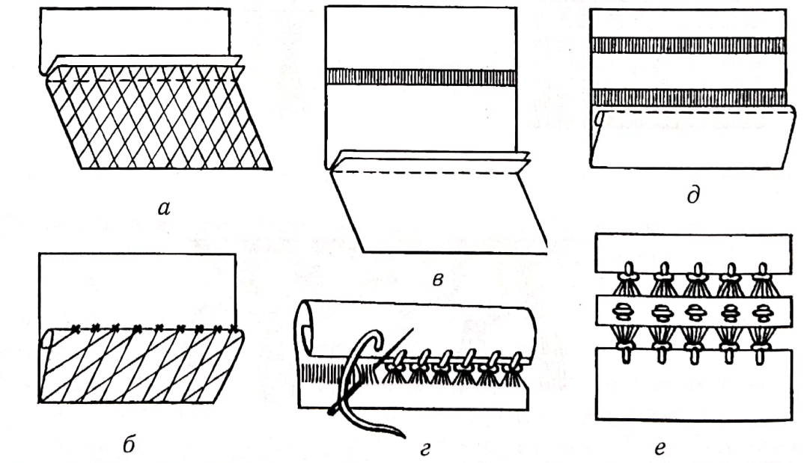
Рис. 119.Оздоблення виробу кольоровою облямівкою з тканини
Шнури і китиці (кутасики) (рис. 120, а–в) для оформлення та оздоблення виробів нескладно зробити власними руками.
Круглі китиці, або
помпони
, виготовляють за допомогою двох картонних кружалець (рис. 120,
г), у центрі яких вирізано або проколото отвори. Кружальця складають одне
до одного, а між ними кладуть петлю з нитки і обмотують картонки ниткою,
доки не заповниться весь отвір (рис. 120, д, е).
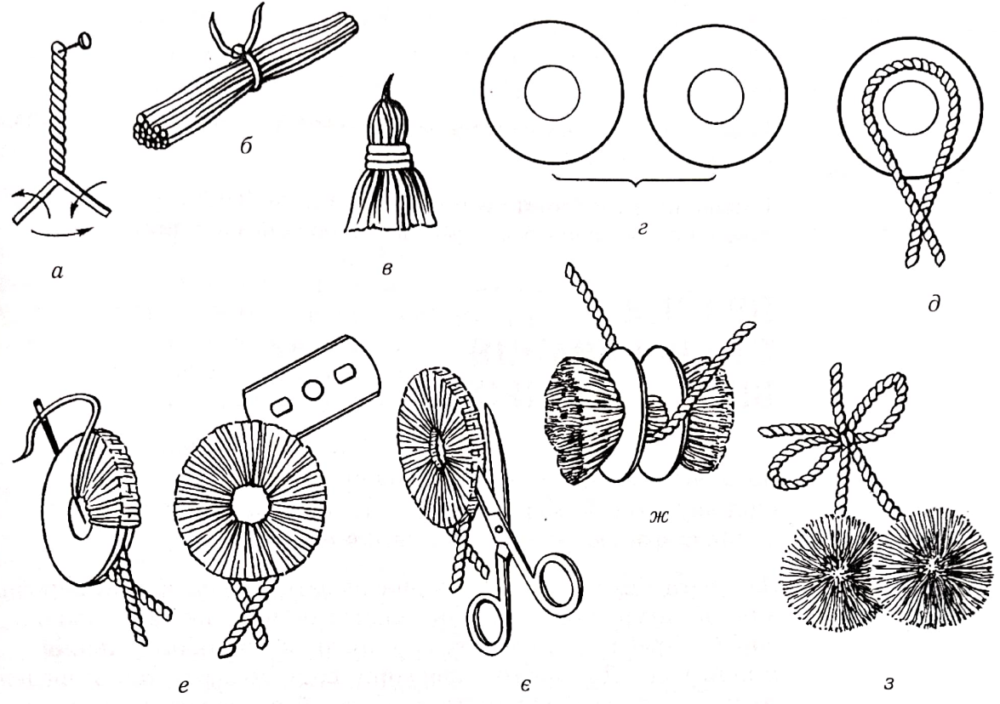
Рис. 120.Оздоби для вишитих виробів: а - шнур; б-в - китиці;
Г-з - круглі китиці, або помпони
Потім розрізують нитки по зовнішньому краю гострим лезом або ножицями (рис. 120, є). Розсунувши картонки, туго зав’язують петлею нитки, знімають картонки і підрівнюють помпон ножицями (рис. 120, ж, з).
Помпони можуть бути одноколірними й барвистими – з різнобарвних ниток.
Бавовняні та шерстяні помпони різних кольорів, розмірів, які прикрашали пояси й шнури, доповнювали народний костюм.
Остаточна обробка вишитих виробів. Аби вишитий виріб мав красивий та ошатний вигляд, його потрібно правильно випрати і випрасувати. Прати вироби слід акуратно й обережно, щоб не пошкодити вишивку, щоб не злиняла фарба, не залишилося плям.
Заливати гарячою водою та виварювати можна тільки вироби з білої натуральної тканини, вишиті білими нитками. Решту виробів треба прати милом або пральним засобом у теплій м’якій воді. Для цього у звичайну воду додають трохи питної соди і дають воді відстоятися. Потім її обережно зливають і використовують для прання. Вироби, вишиті шовковими та синтетичними нитками, перуть у мильній піні, додавши трохи солі, або спеціальними пральними засобами, злегка віджимаючи руками.
Блузку, сукню, сорочку, вишиті кольоровими нитками, перед пранням слід замочити у теплій солоній воді (одну-дві чайні ложки солі на 1 л води). Після цього прополоскати у теплій воді і вже потім прати з милом або порошком у воді, яка має температуру близько 50°С. Добре віджати й прополоскати двічі-тричі у холодній воді, останній раз з оцтом (одна-дві чайні ложки), щоб надати ниткам блиску.
Вироби з лляних і бавовняних тканин, батисту, маркізету, шифону злегка підкрохмалюють. Для цього крохмаль розводять у невеликій кількості холодної води і заварюють, помішуючи, не дуже густо кип’ятком. Потім у таз наливають холодну воду й проціджують крохмаль крізь марлю. Якщо в крохмаль додати трохи молока, то після прасування тканина станс блискучою. Крохмалять вироби по-різному, залежно від ґатунку тканини. Підкрохмаливши виріб, його обережно віджимають і загортають у сухий волохатий рушник або простирадло й сушать.
Дрібні вироби, виконані ажурними вишивками (мережками, сітками, прорізною гладдю) на тонких прозорих тканинах, перуть дуже обережно у теплій мильній піні. У скляну посудину з широким горлом або банку з кришкою заливають теплу воду, засипають мильну стружку або порошок і збовтують кілька разів, щоб утворилася піна. Занурюють вишитий виріб і знову збовтують кілька разів. Якщо виріб дуже забруднений, то його залишають на деякий час у мильній воді, а потім перуть, злегка віджимаючи. Потім добре прополіскують, білі вироби злегка підсинюють, загортають у підкрохмалену тканину й віджимають, не викручуючи.
Прасують вишиті вироби зі споду трохи вологими або крізь вологу тканину на м’якій чистій підстилці з рівною поверхнею. Чим опукліша вишивка, тим м’якшою має бути підстилка. Прасувати треба по нитках тканини – вздовж і впоперек виробу. Особливо обережно слід прасувати вироби з тонких тканин, а також вишиті мережками та ажурними сітками, щоб не пошкодити вишивку праскою. Невишиті місця тканини можна прасувати з лиця. Великі вироби прасують від середини до країв.
Перед роботою праску слід обтерти вологою чистою ганчіркою і насухо витерти. Треба стежити, щоб праска не перегрівалася. Випрасувані вироби мають полежати певний час розгорнутими, щоб просохнути, після чого їх складають.
Контрольні питання:
- Назвіть способи обробки країв виробів.
- Якими мережками виконують обробку китичками?
- Якими мережками виконують рубцювання?
- В чому полягає остаточна обробка вишитих виробів?